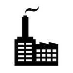

Мы обладаем соответствующими материально-техническими и кадровыми ресурсами,
Информация о компании
Комфорт клиета превыше строгого договора
Качественное обслуживание очень важно для вас, ваших клиентов и сотрудников, поэтому для успешной работы компния "Уют Сервис" использует комплексный подход:
- Индивидуальный алгоритм работы с каждым клиентом
- Своевременность доставки и выполнение оказываемых услуг
- Контроль за ходом работы
Ценообразование
Компания "Уют Сервис" работает в соответствии с потребностями заказчика и нормами ГОСТа. Расчёт цен осуществляется на основе фактически выполненных работ и квадратных метров.
Специалисты
ООО «Уют Сервис» имеет квалифицированных и обученных специалистов с достаточным опытом работы для выполнения поставленных задач Заказчиком.
Список услуг
- Уборка помещений и территорий
- Специализированные работы
- Внутренние инженерные системы
- Наружные инженерные системы
Уборка помещений и территорий
Уборка коммерческой недвижимости и складских помещений
от 30 руб. за м2
В сфере обслуживания коммерческой недвижимости популярной услугой является поддерживающая уборка. Эта уборка включает в себя комплекс работ по круглосуточному поддержанию чистоты на объекте. В зависимости от типа и эксплуатационных характеристик обслуживаемого объекта, производимые работы и их периодичность устанавливаются индивидуально.

Уборка промышленной недвижимости
от 30 руб. за м2
Промышленный клининг отличается, прежде всего, своей крупномасштабностью и тематической направленностью. Для каждого типа промышленного предприятия характерны своя степень загрязнения, свои труднодоступные для уборки места. Уборка производственных помещений включает в себя мытье полов, мойку окон, стен, а также станков и другого оборудования, чистка вентиляционных шахт и воздуховодов, а при необходимости и чистку потолков. Наши сотрудники могут проводить работы, как в рабочее, так и в нерабочее время, в зависимости от пожеланий клиента.
Уборка офисных помещений
от 30 руб. за м2
Чистота офисного помещения это часть успеха любой организации, от этого зависит имидж компании, мнение клиентов, а также настроение сотрудников насколько комфортно и результативной будет их работа.
Уборка помещений может осуществляться, как ежедневно, так и несколько раз в неделю, то насколько часто Вам необходимо оказывать услуги по уборке определяется индивидуально. Уборка офисных помещений включает в себя перечень стандартных услуг, а так же все зависит от ваших потребностей и особенности вашего офиса.
Послестроительная уборка
от 70 руб. за м2
Самое жуткое и изнурительное занятие после строительства или ремонта – это уборка помещений.
Эта работа отличается полной очисткой любых поверхностей и покрытий. Убирая помещение после ремонта - требуется собрать и убрать остатки: цементного раствора, остатки штукатурки и стройматериалов, отмыть пятна краски, герметика, удалить прочие строительные загрязнения. Ваши помещения станут безупречно чистыми и уютными при помощи специальных чистящих средств и технического оборудования, ловких и умелых рук наших сотрудников.
Генеральная уборка помещений
от 60 руб. за м2
Генеральная уборка одна из самых востребованных услуг в клининге. Причин этому несколько. Основные это отсутствие времени, сил и желания делать уборку самостоятельно. А для генеральной уборки нужны не только желание, «свободное» время и немало сил, но и моющие средства и необходимый инвентарь. А для того, чтобы генеральная уборка прошла максимально быстро и качественно нужен большой опыт. Всем необходимым для генеральной уборки, в том числе и опытом, обладают наши сотрудники.
Уборка и уход за прилегающей территорией
от 7 руб. за м2
Уборка прилежащих территорий является востребованной и распространенной услугой. Мы беремся за уборку территории любого назначения и размера. Наши специалисты оборудованы всем необходимым для проведения различных работ по уборке и очистке территории от мусора – снегоуборочные машины, газонокосилки, поливальные машины и многим другим инструментом. Уборка территории производится в удобное для вас время.
Специализированные работы
Мойка окон, фасадов, витрин
от 50 руб. за м2
Мойка и чистка стеклянных конструкций выполняется с применением профессионального инвентаря, техники, исключая повреждение стекла, а именно сколы и царапины, и способствует в будущем долгое время сохранять способность их к водо-отталкиванию. Мы используем только профессиональные средства. Наши специалисты в короткий срок вымоют окна, витрины, балконы, лоджии и фасады. В стоимость входит также мытье откосов и подоконников. Пространство между рамой качественно чистится, удаляются остатки краски и других загрязнений.
Химическая чистка ковровых покрытий и мягкой мебели
от 100 руб. за м2
С течением времени ковровые покрытия и мягкая мебель неизбежно пачкаются, вбирая в себя пыль и частички грязи. Прекрасно известно, что от чистой, здоровой обстановки, в которой мы живём и работаем, зависит наше здоровье. Поэтому во время уборки жилых комнат и офисных помещений ковровым покрытиям и мебели уделяется повышенное внимание. Чистить их необходимо, ведь оседающие на них пыль и грязь не только портят их внешний вид, но и создают прекрасные условия для размножения бактерий. Мы предлагаем Вам сделать химчистку нашими профессионалами, что позволит не только очистить ковровые изделия и мебель, но и сделать их более красивыми.
Размывка твердых полов
от 30 руб. за м2
Под разряд твердых полов попадают такие материалы как: мрамор, гранит, керамогранит, паркет, линолеум, ламинат, наливные покрытия. Вне зависимости от интенсивности использования, все без исключения полы периодически требуют профессионального ухода, включая использование специализированных химсредств и оборудования. В результате правильного ухода, полы на долго остаются презентабельными и сохраняют первоначальный блеск.
Химчистка автомобилей
от 600 руб.
Салон автомобиля в процессе его эксплуатации запыляется и загрязняется, также никто не застрахован от трудновыводимых пятен, которые появляются по той или иной причине. Регулярное посещение автомоек и сухая чистка салона пылесосом не могут радикально улучшить ситуацию. Если Вы давно не делали химчистку салона автомобиля, то можно смело утверждать, что он сильно загрязнен, так как грязь и пыль со временем въедаются в поры и волокна ткани, а пылесос с такими загрязнениями не справляется. Это относится к пластику, коже и другим видам обивки салона.
Ландшафтный дизайн
Ландшафтным дизайном называют практические действия по проектированию, озеленению и благоустройству территорий.
Ландшафтный проект – исходная точка в часто довольно сложном и продолжительном процессе благоустройства и озеленения территории. Его главной задачей является проектирование функционального пространства вокруг дома, определение стилевой концепции будущего сада и основных элементов его планировки. Ландшафтный проект нужен как заказчику, так и его исполнителю.
Благоустройство территорий необходимо для того, чтобы Ваш участок не превратился в запущенный деревенский домик с высаженной вокруг травой, необходимо учитывать некоторые правила благоустройства территории. Цель благоустройства территории заключается в том, чтобы по возможности скрыть либо выделить определенную территорию.
Озеленение участка - это использование живых растений для декорирования территории. Озеленение включает в себя все работы, связанные с флористической составляющей сада. Мы предлагаем полный комплекс услуг по разработке ландшафтного дизайна и воплощению его в реальность.
Вывоз снега и мусора
Мы предлагаем широкий спектр услуг по вывозу мусора и снега с территорий строительных объектов, дворов, автостоянок и промышленных предприятий. Мы производим уборку и вывоз мусора и снега собственной механизированной техникой в соответствии с требованиями санитарных служб и договорными обязательствами компании.
Очистка крыш от наледи и снега
от 40 руб. за м2
Очистка крыш в зимний период – это необходимая мера по обеспечению технических свойств и целостности кровли, но главная задача – обеспечение безопасности людей и машин, припаркованных рядом со зданием. Своевременная очистка кровли от снега, сосулек и наледи обеспечит безопасность людей, сохранность и срок службы вашей кровли. Важно понимать, что уборка кровли от снега – это работа повышенной опасности и необходимо соблюдать меры осторожности при очистке кровли. Наши сотрудники – это альпинисты с большим стажем различных работ, имеющих специальную подготовку и соответствующие удостоверения государственного образца.
Наша компания предлагает как разовую, так и абонентское обслуживание на очистку крыши от снега.
Внутренние инженерные системы
Система отопления
Работы по ремонту, контролю технического состояния, поддержанию работоспособности и исправности, наладке и регулировке, подготовке, пуску в работу и обеспечению необходимых параметров использования при сезонной эксплуатации инженерных систем.
Система холодного и горячего водоснабжения
Работы по смене букс, прокладок в водопроводных кранах и смесителях, регулировка смывных бачков, устранение засоров, уплотнение резьбовых сгонов, набивка сальников.
Система канализации
Работы по химической и механической прочистке сливных каналов, уплотнению сальниковых соединений трубопроводов.
Система электропитания
Работы по проверке целостности изоляции электропроводки, выявления причин её нарушения, ремонт и замена выключателей.
Система освещения
Работы по замене ламп освещения, ремонт проводки, замена цоколей, стартеров, дросселей, светильников.
Наружные инженерные системы
Обслуживание и ремонт, монтаж и демонтаж инженерных сооружений на тепловых сетях, водопровода и канализации
Работы по ремонту кирпичной кладки колодцев, замене обечайки, восстановление гидроизоляции, замене бетонных колец, блоков и перекрытий тепловых камер. Демонтаж неиспользуемых колодцев и тепловых камер. Техническое обслуживание (замена уплотнительных прокладок и т.д.)и замена запорной арматуры в колодцах и камерах.
Строительство тепловых сетей, водопровода и канализации
Монтаж новых водопроводных, канализационных и тепловых сетей, врезки в существующие сети.
Изоляция инженерных сетей
Выполнение работ по гидроизоляции труб мастиками в два слоя, теплоизоляции из минеральной ваты с покрытием лакотканью или листами из нержавеющей ткани, так же по желанию заказчика выполняются работы по теплоизоляции из любых современных материалов.
Устранение аварийных ситуаций
Промывка ливневых и канализационных коллекторов специализированными машинами, устранение утечек воды на сетях (заварка свищей, установка хомутов), откачка воды из колодцев.
Земляные работы
Разработка грунта в траншеях и котлованах современной техникой, вывоз грунта самосвалами, устройство песчаной подушки и щебеночного слоя с трамбовкой, вскрытие асфальта и бетона шоворезными машинами, восстановление грунтового покрытия.